What is OceanParcels?
The OceanParcels project develops Parcels (Probably A Really Computationally Efficient Lagrangian Simulator), a set of Python classes and methods to create customisable particle tracking simulations using output from Ocean Circulation models. Parcels can be used to track passive and active particulates such as water, plankton, plastic and fish.
The code from the OceanParcels project is licensed under an open source MIT license and can be downloaded from github.com/OceanParcels/parcels or installed via anaconda.org/conda-forge/parcels:


The manuscript detailing this first release of Parcels, version 0.9, has been published in Geoscientific Model Development and can be cited as:
As ocean general circulation models (OGCMs) move into the petascale age, where the output of single simulations exceeds petabytes of storage space, tools to analyse the output of these models will need to scale up too. Lagrangian ocean analysis, where virtual particles are tracked through hydrodynamic fields, is an increasingly popular way to analyse OGCM output, by mapping pathways and connectivity of biotic and abiotic particulates. However, the current software stack of Lagrangian ocean analysis codes is not dynamic enough to cope with the increasing complexity, scale and need for customization of use-cases. Furthermore, most community codes are developed for stand-alone use, making it a nontrivial task to integrate virtual particles at runtime of the OGCM. Here, we introduce the new Parcels code, which was designed from the ground up to be sufficiently scalable to cope with petascale computing. We highlight its API design that combines flexibility and customization with the ability to optimize for HPC workflows, following the paradigm of domain-specific languages. Parcels is primarily written in Python, utilizing the wide range of tools available in the scientific Python ecosystem, while generating low-level C code and using just-in-time compilation for performance-critical computation. We show a worked-out example of its API, and validate the accuracy of the code against seven idealized test cases. This version 0.9 of Parcels is focused on laying out the API, with future work concentrating on support for curvilinear grids, optimization, efficiency and at-runtime coupling with OGCMs.
The manuscript detailing version 2.0 of Parcels is available at Geoscientific Model Development and can be cited as:
With the increasing amount of data produced by numerical ocean models, so increases the need for efficient tools to analyse these data. One of these tools is Lagrangian ocean analysis, where a set of virtual particles are released and their dynamics is integrated in time based on fields defining the ocean state, including the hydrodynamics and biogeochemistry if available. This popular methodology needs to adapt to the large variety of models producing these fields at different formats. This is precisely the aim of Parcels, a Lagrangian ocean analysis framework designed to combine (1) a wide flexibility to model particles of different natures and (2) an efficient implementation in accordance with modern computing infrastructure. In the new Parcels v2.0, we implement a set of interpolation schemes to read various types of discretised fields, from rectilinear to curvilinear grids in the horizontal direction, from z- to s- levels in the vertical and different variable distributions such as the Arakawa's A-, B- and C- grids. In particular, we develop a new interpolation scheme for a three-dimensional curvilinear C-grid and analyse its properties. Parcels v2.0 capabilities, including a suite of meta-field objects, are then illustrated in a brief study of the distribution of floating microplastic in the North West European continental shelf and its sensitivity to different physical processes.
Installing Parcels
The simplest way to install the Parcels code is to use Anaconda and the Parcels Conda-Forge package with the latest release of Parcels. This package will automatically install (almost) all the requirements for a fully functional installation of Parcels. This is the “batteries-included” solution probably suitable for most users.
The steps below are the installation instructions for Linux / macOS and for Windows. If the commands for Linux / macOS and Windows differ, this is indicated with a comment at the end of the line.
- Install Anaconda's Miniconda following the steps at https://conda.io/docs/user-guide/install/, making sure to select the Python-3 version. If you're on Linux / macOS, it also assumes that you installed Miniconda-3 to your home directory.
- Start a terminal (Linux / macOS) or the Anaconda prompt (Windows). Activate the root (or base) environment of your Miniconda and create an environment containing Parcels, all its essential dependencies, and the nice-to-have Jupyter, cartopy, and ffmpeg packages:
conda activate root # Linux / macOS
activate root # Windows
conda create -n py3_parcels -c conda-forge python=3.6 parcels jupyter cartopy ffmpeg
*Note that for some of the examples, pytest needs to be installed with conda install -n py3_parcels pytest.
- Activate the newly created Parcels environment.
conda activate py3_parcels # Linux / macOS
activate py3_parcels # Windows
- Get a copy of the Parcels tutorials and examples, as well as the data required to run these:
parcels_get_examples parcels_examples
*Note that if you are on Windows and you get a Fatal error in launcher error, you can instead download the data with
curl https://raw.githubusercontent.com/OceanParcels/parcels/master/parcels/scripts/get_examples.py > parcels_get_examples.py
python parcels_get_examples.py parcels_examples
- Run the simplest of the examples to validate that you have a working Parcels setup:
cd parcels_examples
python example_peninsula.py --fieldset 100 100
*Note that if you are on macOS and get a compilation error, you may need to accept the Apple xcode license (xcode-select --install). If this does not solve the compilation error, you may want to try running export CC=gcc . If the compilation error remains, you may want to check this solution.
- Optionally, if you want to run all the examples and tutorials, start Jupyter and open the tutorial notebooks:
jupyter notebook
- The next time you start a terminal and want to work with Parcels, activate the environment with:
conda activate py3_parcels # Linux / macOS
activate py3_parcels # Windows
Installing a non-released version of Parcels
There might be cases where you want to install a version of Parcels that has not been released yet. (Perhaps, if you want to use a bleeding-edge feature which already is included on Github, but not in the conda-forge package.)
Then, just after step 2 of
Installing Parcels above, use the following commands to remove the conda-forge package again, and use
pip to install Parcels from Github:
conda activate py3_parcels # Linux / macOS
activate py3_parcels # Windows
conda remove --force parcels
pip install git+https://github.com/OceanParcels/parcels.git@master
Installation for developers
Parcels depends on a working Python installation, a netCDF installation, a C compiler, and various Python packages. If you prefer to maintain your own Python installation providing all this,
git clone the
master branch of Parcels and manually install all packages listed under
dependencies in the environment files (
environment_py3_linux.yml for Linux,
environment_py3_osx.yml for OSX and
environment_py3_win.yml for Windows), before running
python setup.py install.
Installation of Parallel Parcels with MPI
Parcels uses MPI for parallel execution, but this only works on linux and macOS. To install it, follow the steps below and see
here for further documentation
- We strongly encourage to create a new environment for Parallel Parcels:
conda create -n py3_parcels_mpi -c conda-forge python=3.6 parcels mpi4py mpich scikit-learn jupyter cartopy ffmpeg
conda activate py3_parcels_mpi
- If you are on a Mac, you may need to issue
export CONDA_BUILD_SYSROOT=/
export C_INCLUDE_PATH=$C_INCLUDE_PATH:/Applications/Xcode.app/Contents//Developer/Platforms/MacOSX.platform/Developer/SDKs/MacOSX10.14.sdk/usr/include/
Where possibly you may need to change the MacOSX10.14.sdk into the macOS version you have.
- Now, you can run in Parallel with e.g.
mpirun -np 2 python parcels/examples/example_stommel.py -p 10
Let us know your feedback!
Contributing to Parcels development
Ocean
Parcels is fully open-source community and strongly encourages contributions from users, as also stated in our
Contributor Code of Conduct. If you want to help make Ocean
Parcels even better, then please consider contributing to its development. To get started, see
this excellent tutorial on the Git workflow and
this great general overview of contributing to open source software.
Parcels tutorials
The best way to get started with Parcels is to explore the Jupyter notebooks below. You can either read them on the Jupyter notebook viewer, or interact with them on
mybinder.org:
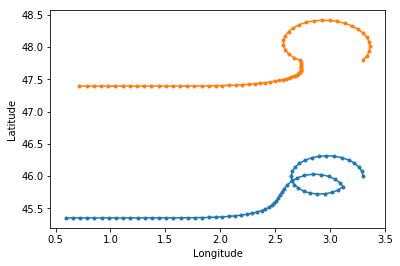
The Parcels tutorial provides an overview of the main features of Parcels and is therefore a good starting point for new users
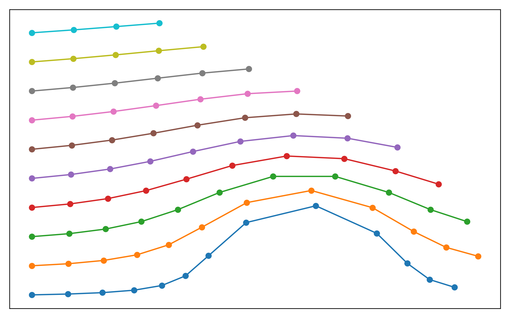
A tutorial on how to start analyzing the Parcels output
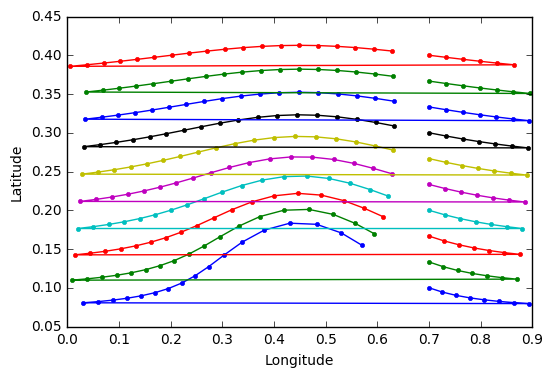
A tutorial to explain how to implement periodic (east-west or north-south) boundaries in Parcels
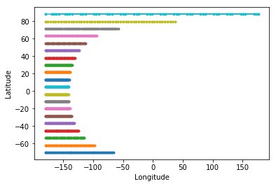
A tutorial to explain how to use Parcels with hydrodynamic models that use curvilinear grids, such as NEMO
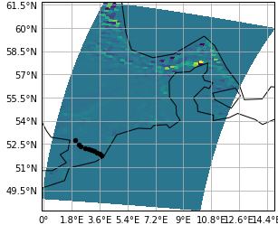
A tutorial to create a FieldSet for three-dimensional NEMO data and other C-grids
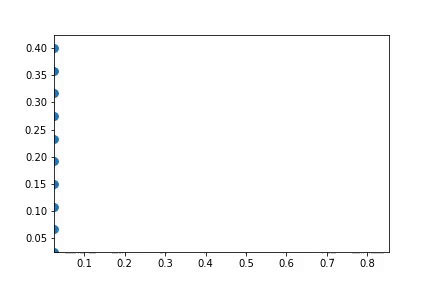
A tutorial on how to release particles after the start of a run
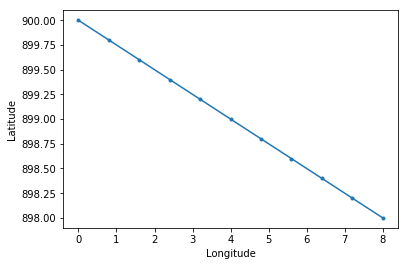
A tutorial on how to combine different Fields for advection
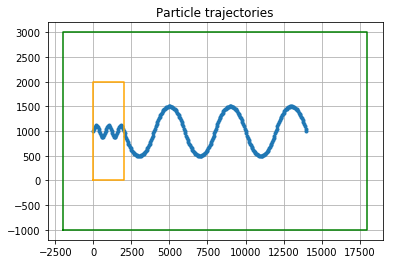
A tutorial on how to use Fields with (multiple) nested domains
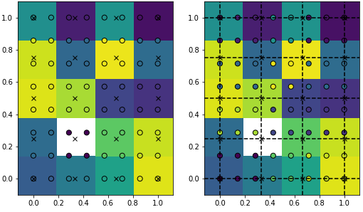
A tutorial on the different interpolation methods available in Parcels
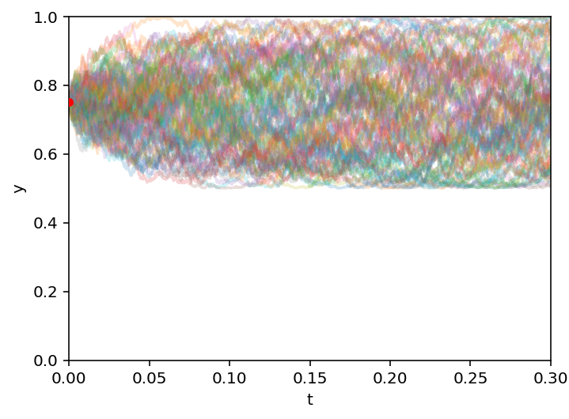
A tutorial about how to use the advection-diffusion kernels, with a short explanation of how diffusion is implemented in a Lagrangian setting.
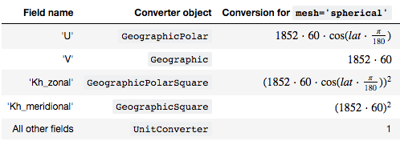
A tutorial on how Parcels automatically converts the units of velocity and diffusion fields from meters to degrees
A tutorial on how to create FieldSets from NetCDF files with Calendars that can't be parsed by xarray.
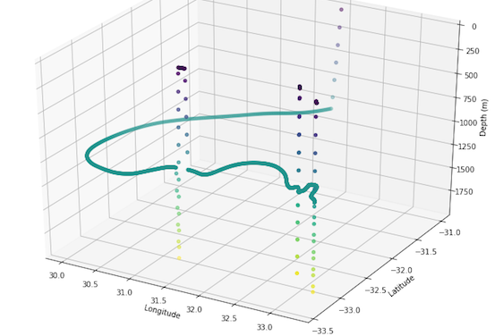
A tutorial on how to create a custom Kernel that mimics sampling of Argo floats
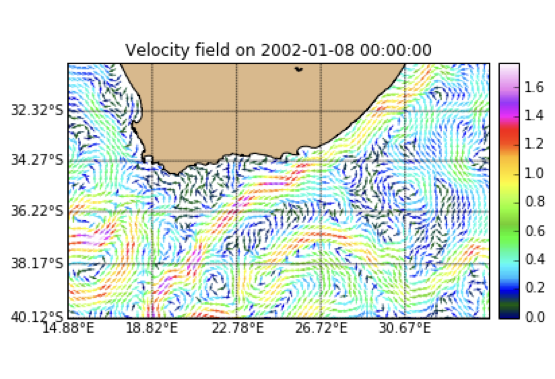
A tutorial on how to plot particle trajectories
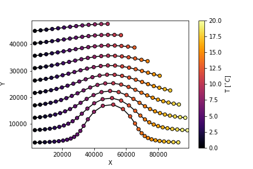
A tutorial on how to sample fields with particles
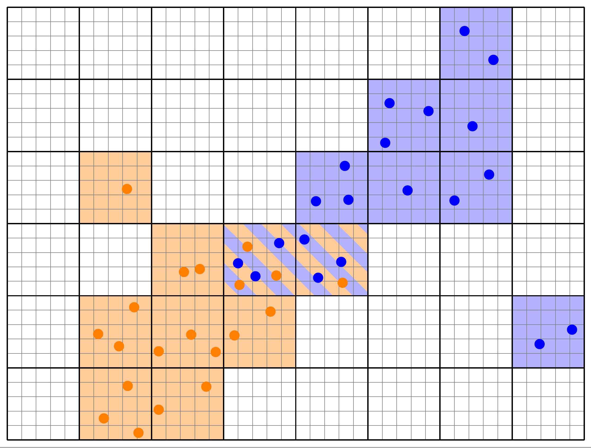
A notebook with background on the parallelisation approach
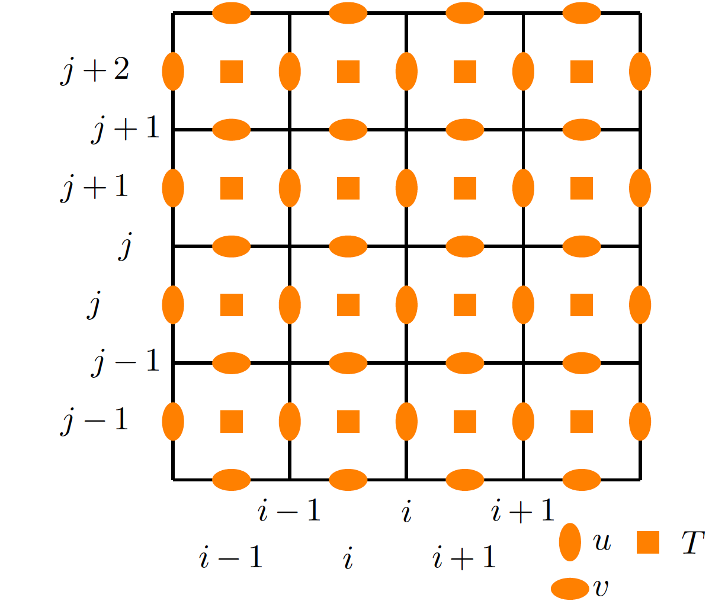
A notebook with background on the different types of grid indexing
Parcels development status
The current release of Parcels, version 2.2, is a fully-functional, feature-complete code for offline Lagrangian ocean analysis. See below for a list of features, or keep an eye on the
Github Development Timeline page
Major features
Experimental features
Future development goals
Frequently Asked Questions and further support
See the
FAQ page for further information on using and developing Parcels. This includes information on
the Parcels design overview,
tips on construction of FieldSet objects,
support for writing custom Kernels and
an explanation of the NetCDF output format.
If you need help with Parcels, try our Gitter channels about the
installation and
running of Parcels. There is also an
extensive documentation of all methods and classes in Parcels.
Peer-reviewed articles using Parcels
The detection of finite-time coherent particle sets in Lagrangian trajectory data using data clustering techniques is an active research field at the moment. Yet, the clustering methods mostly employed so far have been based on graph partitioning, which assigns each trajectory to a cluster, i.e. there is no concept of noisy, incoherent trajectories. This is problematic for applications to the ocean, where many small coherent eddies are present in a large fluid domain. In addition, to our knowledge none of the existing methods to detect finite-time coherent sets has an intrinsic notion of coherence hierarchy, i.e. the detection of finite-time coherent sets at different spatial scales. Such coherence hierarchies are present in the ocean, where basin scale coherence coexists with smaller coherent structures such as jets and mesoscale eddies. Here, for the first time in this context, we use the density-based clustering algorithm OPTICS (Ankerst et al., 1999) to detect finite-time coherent particle sets in Lagrangian trajectory data. Different from partition based clustering methods, OPTICS does not require to fix the number of clusters beforehand. Derived clustering results contain a concept of noise, such that not every trajectory needs to be part of a cluster. OPTICS also has a major advantage compared to the previously used DBSCAN method, as it can detect clusters of varying density. Further, clusters can also be detected based on density changes instead of absolute density. Finally, OPTICS based clusters have an intrinsically hierarchical structure, which allows to detect coherent trajectory sets at different spatial scales at once. We apply OPTICS directly to Lagrangian trajectory data in the Bickley jet model flow and successfully detect the expected vortices and the jet. The resulting clustering separates the vortices and the jet from background noise, with an imprint of the hierarchical clustering structure of coherent, small scale vortices in a coherent, large-scale, background flow. We then apply our method to a set of virtual trajectories released in the eastern South Atlantic Ocean in an eddying ocean model and successfully detect Agulhas rings. At larger scale, our method also separates the eastward and westward moving parts of the subtropical gyre. We illustrate the difference between our approach and partition based k-Means clustering using a 2-dimensional embedding of the trajectories derived from classical multidimensional scaling. We also show how OPTICS can be applied to the spectral embedding of a trajectory based network to overcome the problems of k-Means spectral clustering in detecting Agulhas rings.
Search and find mission in ocean environment is a none trivial operation given the amount of random parameters associated with it. The uncertain and dynamic aspects related to ocean current movement make the trajectory prediction of drifting lost object onto sea water a very complicated task. In this work we present a novel lost target searching algorithm based on Recursive Area Clustering and target trajectory predication in ocean environment. Based on the widely known GlobCurrent v2 dataset which model the drifting of ocean surface current using satellite sensory data combined with mathematical and simulation modelling, we propose a regression algorithm based on our Recursive Area Clustering algorithm that we have developed previously to determine the strategic zones (weight centers) characterizing the high density areas extracted from drifting target history. Given those weight centers, we predict the object trajectory through refined regression. The predicted lost object trajectory is used to plan the path of UAV search mission. The model developed has a significant impact as we have tested our strategy in a scenario for searching an area covering 68517 km, we have shown that 78% of the time, the lost object can be found within 32 km distance of the predicted trajectories limiting the significant search area to be about 5% of the whole searched area.
A valuable analogue for assessing Earth’s sensitivity to warming is the Last Interglacial (LIG; 129- 116 kyr), when global temperatures (0 to +2CC) and mean sea level (+6 to 11 m) were higher than today. The direct contribution of warmer conditions to global sea level (thermosteric) are uncertain. We report here a global network of LIG sea surface temperatures (SST) obtained from various published temperature proxies (e.g. faunal/floral assemblages, Mg/Ca ratios of calcareous plankton, alkenone UK’37). We summarise the current limitations of SST reconstructions for the LIG and the spatial temperature features of a naturally warmer world. Because of local δ18O seawater changes, uncertainty in the age models of marine cores, and differences in sampling resolution and/or sedimentation rates, the reconstructions are restricted to mean conditions. To avoid bias towards individual LIG SSTs based on only a single (and potentially erroneous) measurement or a single interpolated data point, here we report average values across the entire LIG. Each site reconstruction is given as an anomaly relative to 1981-2010, corrected for ocean drift and where available, seasonal estimates provided (189 annual, 99 December-February, and 92 June-August records). To investigate the sensitivity of the reconstruction to high temperatures, we also report maximum values during the first five millennia of the LIG (129-124 kyr). We find mean global annual SST anomalies of 0.2 ± 0.1C averaged across the LIG and an early maximum peak of 0.9 ± 0.1C respectively. The global dataset provides a remarkably coherent pattern of higher SST increases at polar latitudes than in the tropics (demonstrating the polar amplification of surface temperatures during the LIG), with comparable estimates between different proxies. Polewards of 45 ̊ latitude, we observe annual SST anomalies averaged across the full LIG of >0.8 ± 0.3C in both hemispheres with an early maximum peak of >2.1 ± 0.3C. Using the reconstructed SSTs suggests a mean LIG global thermosteric sea level rise of 0.08 ± 0.1 m and a peak contribution of 0.39 ± 0.1 m respectively (assuming warming penetrated to 2000 m depth). The data provide an important natural baseline for a warmer world, constraining the contributions of Greenland and Antarctic ice sheets to global sea level during a geographically widespread expression of high sea level, and can be used to test the next inter-comparison of models for projecting future climate change. The dataset described in this paper, including summary temperature and thermosteric sea-level reconstructions, are available at https://doi.pangaea.de/10.1594/PANGAEA.904381 (Turney et al., 2019).
The Mediterranean Sea is characterized by a relatively strong west to east salinity gradient, which makes it an area suitable to test the effect of salinity on foraminiferal shell geochemistry. We collected living specimens of the planktonic foraminifer Globigerinoides ruber (white) to analyse the relation between element/Ca ratios, stable oxygen isotopes of their shells and surface seawater salinity, isotopic composition and temperature. The oxygen isotopes of sea surface water correlate with salinity in the Mediterranean also during winter, when sampled for this study. Sea water oxygen and hydrogen isotopes are positively correlated in both the eastern and western Mediterranean Sea, though especially in the eastern part the relationship differs from values reported previously for that area. The slope between salinity and seawater oxygen isotopes is lower than previously published. Still, despite the rather modest slope, seawater and foraminiferal carbonate oxygen isotopes are correlated in our dataset although with large residuals and high residual variability. This scatter can be due to either biological variability in vital effects or environmental variability. Numerical models backtracking particles show ocean current driven mixing of particles of different origin might dampen sensitivity and could result in an offset caused by horizontal transport. Results show that Na/Ca is positively correlated to salinity and independent of temperature. Foraminiferal Mg/Ca increases with temperature, as expected, and in line with earlier calibrations, also in the high salinity environment. By using living foraminifera during winter, the previously established Mg/Ca-temperature calibration is extended to temperatures below 18 °C, which is a fundamental prerequisite of using single foraminifera for reconstructing past seasonality.
The basinwide surface transport of tracers such as heat, nutrients and plastic in the North Atlantic Ocean is organized into large scale flow structures such as the Western Boundary Current and the Subtropical and Subpolar Gyres. Being able to identify these features from drifter data is important for studying tracer dispersal, but also to detect changes in the large scale surface flow due to climate change. We propose a new and conceptually simple method to detect groups of trajectories with similar dynamical behaviour from drifter data using network theory and normalized cut spectral clustering. Our network is constructed from conditional bin-drifter probability distributions and naturally handles drifter trajectories with data gaps and different lifetimes. The eigenvalue problem of the respective Laplacian can be replaced by a singular value decomposition of a related sparse data matrix. The construction of this matrix scales with O(NM + Nτ), where N is the number of particles, M the number of bins and τ the number of time steps. The concept behind our network construction is rooted in a particle's symbolic itinerary derived from its trajectory and a state space partition, which we incorporate in its most basic form by replacing a particle's itinerary by a probability distribution over symbols. We represent these distributions as the links of a bipartite graph, connecting particles and symbols. We apply our method to the periodically driven double-gyre flow and successfully identify well-known features. Exploiting the duality between particles and symbols defined by the bipartite graph, we demonstrate how a direct low-dimensional coarse definition of the clustering problem can still lead to relatively accurate results for the most dominant structures, and resolve features down to scales much below the coarse graining scale. Our method also performs well in detecting structures with incomplete trajectory data, which we demonstrate for the double-gyre flow by randomly removing data points. We finally apply our method to a set of ocean drifter trajectories and present the first network-based clustering of the North Atlantic surface transport based on surface drifters, successfully detecting well-known regions such as the Subpolar and Subtropical Gyres, the Western Boundary Current region and the Carribean Sea.
A large percentage of global ocean plastic waste enters the northern hemisphere Indian Ocean (NIO). Despite this, it is unclear what happens to buoyant plastics in the NIO. Because the subtropics in the NIO is blocked by landmass, there is no subtropical gyre and no associated subtropical garbage patch in this region. We therefore hypothesise that plastics "beach" and end up on coastlines along the Indian Ocean rim. In this paper, we determine the influence of beaching plastics by applying different beaching conditions to Lagrangian particle tracking simulation results. Our results show that a large amount of plastic likely ends up on coastlines in the NIO, while some crosses the equator into the southern hemisphere Indian Ocean (SIO). In the NIO, the transport of plastics is dominated by seasonally reversing monsoonal currents, which transport plastics back and forth between the Arabian Sea and the Bay of Bengal. All buoyant plastic material in this region beaches within a few years in our simulations. Countries bordering the Bay of Bengal are particularly heavily affected by plastics beaching on coastlines. This is a result of both the large sources of plastic waste in the region, as well as ocean dynamics which concentrate plastics in the Bay of Bengal. During the intermonsoon period following the southwest monsoon season (September, October, November), plastics can cross the equator on the eastern side of the NIO basin into the SIO. Plastics that escape from the NIO into the SIO beach on eastern African coastlines and islands in the SIO or enter the subtropical SIO garbage patch.
Estimates of plastic inputs into the ocean are orders of magnitude larger than what is found in the surface waters. This can be due to discrepancies in the sources of plastic released into the ocean, but can also be explained due to the fact that it is not well known what the most dominant sinks of marine plastics are, and on what time scales these operate. To get a better understanding on possible sources and sinks, an inverse modelling methodology is presented here for a Lagrangian ocean model, estimating floating plastic quantities in the Mediterranean Sea. Field measurements of plastic concentrations in the Mediterranean are used to inform parametrizations defining various sources of marine plastics, and removal of plastic particles due to beaching and sinking. The parameters of the model are found using inverse modelling, by comparison of model results and measurements of floating plastic concentrations. Time scales for the sinks are found, and likely sources of plastics can be ranked in importance. A new mass balance is made for floating plastics in the Mediterranean: for 2015 there is an estimated input of 2,100-3,400 tonnes, and of plastics released since 2006, about 170-420 tonnes remain afloat in the surface waters, 49-63% ended up on coastlines, and 37-51% have sunk down.
Aim: Population connectivity of benthic marine organisms depends strongly on planktonic larval dispersal and is controlled by geographic distance and oceanographic structure. We examine isolation by distance versus resistance to barriers (ocean current boundaries) against a background of post‐glacial habitat expansion in a small benthic fish of the Adriatic Sea.
Location: Adriatic Sea, Eastern Mediterranean.
Taxon: Tripterygion tripteronotum.
Methods: We performed population genetic analyses using mitochondrial control region sequences of 550 individuals from 25 locations sampled along the Eastern Adriatic coast. Investigations of population structure included differentiation tests, cluster analyses and distance‐based redundancy analysis. We then ran Lagrangian simulations of passive larval drift to examine correlations among population structure, geographic distance and the Adriatic gyre system. To test for signatures of a post‐glacial range expansion, we modelled the demographic history of the populations and examined the geographic distribution of genetic diversity.
Results: Genetic population structure corresponded to the Adriatic gyres without additional effect of geographic distance. Inference of northward‐biased gene flow between the northern and the Istrian gyre was consistent with simulated trajectories of passive drift, whereas the phylogeographic break coinciding with the boundary between the Central and the Northern Adriatic gyre was stronger than predicted by drift simulations. Genetic connectivity of populations within gyres was high. Genetic signatures of population expansion were consistent with a rapid post‐glacial recolonization of the northern Adriatic.
Main conclusions: The combination of dense sampling and passive drift simulation allowed us to distinguish among effects of geographic distance, oceanographic features and palaeoenvironmental changes on current population structure. Comparisons between realized and potential connectivity illustrate the value of integrating different data sources to understand population structure and inform conservation planning.
Submesoscale coherent vortices (SCVs) are numerous in high‐resolution numerical simulations, but their observations are scarce. Among the few in situ available measurements of SCVs, a vast majority concern anticyclones. No cyclonic SCV with large dynamical Rossby number (|ζ /f | > 1) has ever been sampled. This suggested that such small cyclones may lack robustness. Here, we present in situ measurements of an intense cyclonic SCV in the Arabian Sea. This eddy lay at 600 m depth, with a Rossby number and a dynamical Rossby number |ζ /f | > 1.5. This cyclone was most likely generated at the mouth of the Gulf of Aden. It trapped and advected Red Sea Water, from there on. This highlights the role of deep SCVs in the spreading of salty waters across the Arabian Sea.
Here we present an assessment of eddy activity in a 3,500 × 2,000 km region of the North Pacific. Eddies were identified and tracked within a numerical simulation that used the Massachusetts Institute of Technology general circulation model and an eddy characterization algorithm. Spatially, eddy births were more frequent: (1) nearshore (cyclones) and offshore (anticyclones) on the windward side of the main Hawai‘ian Islands; (2) in patches of cyclones and anticyclones that resembled the dipole structure of wind stress curl along the islands’ leeward side; and (3) in zonal patches of eddies of both polarities west and north of the islands. Temporally, high eddy activities occurred in spring. There was a meridional distribution of eddy lifespans, which increased northward. Cyclones were more abundant, longer‐lived, smaller, and more nonlinear. Reef fish spawning locations in Hawai‘i coincide with the regions of high eddy activity, with nonlinear eddies responsible for high larval retention.
The knowledge gap on the early life-history of sea turtles during the “lost years” continues to hinder research and conservation of this critical life stage when mortality rates are the highest. An oceanic model was used in combination with a Lagrangian particle tracking framework to simulate and identify potential post-hatchling dispersal trajectories of loggerhead and leatherback turtles in the South Western Indian Ocean. The study aimed to investigate the effect of hatchling swimming behaviour on hatchling dispersal and survival probability. To our knowledge, this study provides the first estimate of neonate sea turtle dispersal in the SWIO, by combining a particle tracking model with in situ hatchling behavioural data. The model revealed that most virtual hatchlings are transported south-westward in the Agulhas Current with three distinct final locations after a year-long si- mulation (each zone comprising on average > 20% of the total amount of particles): the Agulhas Return, the SE Atlantic and the Southern Ocean zones. However, because loggerhead hatchlings are less strong swimmers compared to leatherbacks, they can be advected northward in the near-shore coastal current. Simulations re- vealed that initial active swimming (frenzy) as well as variability in oceanic conditions strongly influenced dispersal of virtual hatchlings. Furthermore, variability in oceanic conditions dispersed virtual hatchlings into different areas where threats, like fisheries bycatch, might also influence their survival. Lastly, the results of this study have potentially broad implications for climate change if turtles adapt by nesting earlier/later during the nesting season or further south which may influence hatchling locomotor performance and ultimately survival at early life stages.
Predicting the trajectories of buoyant objects drifting at the ocean surface is important for a variety of different applications. To minimize errors in predicted trajectories, the dominant transport mechanisms have to be considered. In addition to the background surface currents (i.e., geostrophic, tidal, baroclinic currents), the wind-driven drift current can have a significant influence on the dynamics of buoyant objects. The drift current consists of two components: Stokes drift and a wind-induced shear current. The drift current has a strong vertical profile that can have a large influence on the transport of buoyant objects. However, few practical methods exist that consider the vertical profile of the drift current when predicting particle pathways on the ocean surface. The aim of this paper is to introduce a depth-dependent drift current correction factor (“drift factor”). We test the usefulness of this drift factor by simulating the transport of two types of ocean surface drifters, released simultaneously within the coverage of a high-frequency ocean radar (HFR) system. Our results show velocity differences between the two types of drifters and the HFR measured ocean surface currents. We suggest that these differences are the result of the drift current vertical profile. Our particle tracking simulations provide an illustrative example, indicating the importance of accounting for a drift factor that takes the variation of the drift current with depth into account.
A new estimate of Agulhas leakage transport is calculated using profiling floats and drifters. Since Richardson's seminal estimate of 15 Sv in 2007, the number of floats and drifters passing through the Agulhas Current has quadrupled. Within uncertainties we find the same leakage percentages as Richardson, with 34% of drifters leaking at the surface and 21% of floats leaking at 1,000 m depth. We find that the drifters tend to follow a northward leakage pathway via the Benguela Current compared to the northwestward leakage pathway of the floats along the Agulhas Ring corridor. We simulate the isobaric and profiling behavior of the floats and drifters using two high resolution models and two offline Lagrangian tracking tools, quantifying for the first time the sampling biases associated with the observations. We find that the isobaric bias cannot be robustly simulated but likely causes an underestimate of observed leakage by one or two Sverdrups. The profiling behavior of the floats causes no significant bias in the leakage. Fitting a simulated vertical leakage profile to the observed leakage percentages from the floats and drifters and using the mean Agulhas transport observed by a moored array at 34°S we find an improved Agulhas leakage transport of 21.3 Sv, with an estimated error of 4.7 Sv. Our new leakage transport is higher primarily because we account for leakage at depths down to 2,000 m, while Richardson considered only the top 1,000 m of the water column.
Transport of larvae by ocean currents is an important dispersal mechanism for many species. The timing and location of spawning can have a large influence on settlement location. Shifts in the known spawning habitat of fish, whether due to climate or the discovery of new spawning stock, can influence the distribution of juveniles and our understanding of connectivity. The globally‐distributed species; Pomatomus saltatrix, is one such example where a previously unrecognised summer spawning event and a more southern latitudinal extent was recently reported for the southwest Pacific population. Although restrictions are in place to protect the traditional spawning event, the importance of the newly recognised summer spawning event is uncertain. Here we investigate larval dispersal of P. saltatrix using particle tracking simulations to identify the contributions of the different spawning events to settlement. By modelling dispersal of larvae released in northern and mid‐latitude regions over the Austral spring and summer we show that the newly recognised mid‐latitude summer spawning event contributes over 50% of the larvae reaching southern latitudes. This is due to a reduced (1‐2 d) pelagic larval duration (associated with temperature), resulting in reduced larval mortality, and the seasonal (summer) strengthening of the East Australian Current (EAC) transporting particles ~50km further south. These findings demonstrate that in dynamic boundary current systems such as the EAC, the final settlement location of larvae that are transported by ocean currents can vary considerably depending on the timing and location of spawning and that multiple spawning events are important for maximum dispersal.
Robust predictions of future changes in global biogeochemical cycling require an understanding of how microorganisms adapt to stressful and changing environments. In the ocean, rates of adaptation will be a function of both evolutionary timescales and physical dynamics. However, little is known about this interaction. We examined evolutionary dynamics of marine microbes by combining a model of microbial adaptation with varying selection pressures with a high-resolution ocean circulation model. A trade-off emerged between two evolutionary strategies: (i) ability to adapt plastically to short-term environmental fluctuations with delayed genetic adaptation and (ii) more rapid genetic adaptation with limited response to short-term environmental fluctuations. This trade-off determines evolutionary timescales and provides a foundation for understanding distributions of microbial traits and biogeochemistry.
On 7 August 2019, a 195 km2 raft of andesitic pumice was produced at 200 m below sea level at an unnamed submarine volcano in the Tonga Islands (Southwest Pacific Ocean). Drifting chiefly westwards, the raft reached the Fiji Islands on the 19 September. Yachts that crossed the raft as early as two days post‐eruption provided an outstanding dataset of raft characteristics and pristine samples. Further, exceptional tracking of raft dispersal by satellite images allow us to contrast virtual particle tracking methods with ocean model currents to explore the relative influence of surface currents, wind, and wave action on pumice flotsam dispersal over up to two years. Attenuation of ocean waves by large and compact pumice rafts appears to reduce the effect of Stokes drift. The coupling of real‐time satellite observations with oceanographic Lagrangian simulations allows near‐real time forecasting for global maritime hazard mitigation.
The north Atlantic subpolar gyre (SPG) has been widely implicated as the source of large-scale changes in the subpolar marine environment. However, inconsistencies between indices of SPG-strength have raised questions about the active role SPG-strength and size play in determining water properties in the eastern subpolar North Atlantic (ENA). Here, by analyzing various SPG indices derived from observations and a global coupled model, we show that the choice of the SPG index dictates the interpretation of SPG strength-salinity relationship in the ENA. Variability in geostrophic currents derived from observed hydrography and model based Lagrangian trajectories reveal zonal shifts of advective pathways in the ENA and meridional shifts in the western intergyre region. Such shifts in advective pathways are manifestations of variability in the size and strength of the SPG, and they impact salinity by modulating the proportion of subpolar and subtropical waters reaching the ENA. SPG indices based on subsurface density and principal component analysis of sea surface height variability capture these shifts in advective pathways, and are therefore best suited to describe SPG-salinity relationship in the ENA. Our results establish the dynamical constraints on the choice of the SPG index and emphasize that SPG indices should be cautiously interpreted.
To better predict how populations and communities respond to climatic temperature variation, it is necessary to understand how the shape of the response of fitness-related traits to temperature evolves (the thermal performance curve). Currently, there is disagreement about the extent to which the evolution of thermal performance curves is constrained. One school of thought has argued for the prevalence of thermodynamic constraints through enzyme kinetics, whereas another argues that adaptation can—at least partly—overcome such constraints. To shed further light on this debate, we perform a phylogenetic meta-analysis of the thermal performance curve of growth rate of phytoplankton—a globally important functional group—, controlling for potential environmental effects. We find that thermodynamic constraints have a minor influence on the shape of the curve. In particular, we detect a very weak increase of the maximum curve height with the temperature at which the curve peaks, suggesting a weak “hotter-is-better” constraint. Also, instead of a constant thermal sensitivity of growth across species, as might be expected from strong constraints, we detect phylogenetic signal in this as well as all curve parameters. Our results suggest that phytoplankton thermal performance curves adapt to thermal environments largely in the absence of hard thermodynamic constraints.
Floating plastic debris is an increasing source of pollution in the world's oceans. Numerical simulations using models of ocean currents give insight into the transport and distribution of microplastics in the oceans, but most simulations do not account for the oscillating flow caused by global barotropic tides. Here, we investigate the influence of barotropic tidal currents on the transport and accumulation of floating microplastics, by numerically simulating the advection of virtual plastic particles released all over the world's oceans and tracking these for 13 years. We use geostrophic and surface Ekman currents from GlobCurrent and the currents caused by the four main tidal constituents (M2, S2, K1, and O1) from the FES model. We analyze the differences between the simulations with and without the barotropic tidal currents included, focusing on the open ocean. In each of the simulations, we see that microplastic accumulates in regions in the subtropical gyres, which is in agreement with observations. The formation and location of these accumulation regions remain unaffected by the barotropic tidal currents. However, there are a number of coastal regions where we see differences when the barotropic tidal currents are included. Due to uncertainties of the model in coastal regions, further investigation is required in order to draw conclusions in these areas. Our results suggest that, in the global open ocean, barotropic tidal currents have little impact on the transport and accumulation of floating microplastic and can thus be neglected in simulations aimed at studying microplastic transport in the open ocean.
We illustrate relationships between classical kernel-based dimensionality reduction techniques and eigendecompositions of empirical estimates of reproducing kernel Hilbert space operators associated with dynamical systems. In particular, we show that kernel canonical correlation analysis (CCA) can be interpreted in terms of kernel transfer operators and that it can be obtained by optimizing the variational approach for Markov processes score. As a result, we show that coherent sets of particle trajectories can be computed by kernel CCA. We demonstrate the efficiency of this approach with several examples, namely, the well-known Bickley jet, ocean drifter data, and a molecular dynamics problem with a time-dependent potential. Finally, we propose a straightforward generalization of dynamic mode decomposition called coherent mode decomposition. Our results provide a generic machine learning approach to the computation of coherent sets with an objective score that can be used for cross-validation and the comparison of different methods.
While coherent sets of particles are common in dynamical systems, they are notoriously challenging to identify. In this article, we leverage the combination of a suite of methods designed to approximate the eigenfunctions of transfer operators with kernel embeddings in order to design an algorithm for detecting coherent structures in Langrangian data. It turns out that the resulting method is a well-known technique to analyze relationships between multidimensional variables, namely, kernel canonical correlation analysis (CCA). Our algorithm successfully identifies coherent structures in several diverse examples, including oceanic currents and a molecular dynamics problem with a moving potential. Furthermore, we show that a natural extension of our algorithm leads to a coherent mode decomposition (CMD), a counterpart to dynamic mode decomposition (DMD).
The tracking of virtual particles is one of the main numerical tools to understand the global dispersion of marine plastic debris and has been successful in explaining the global-scale accumulation patterns of surface microplastic, often called `garbage patches'. Yet, the inherent inaccuracies in plastic input scenarios and ocean circulation model results produce uncertainties in particle trajectories, which amplify due to the chaotic property of the surface ocean flow. Within this chaotic system, the subtropical `garbage patches' correspond to the attractor. These facts make the large scale surface ocean circulation a mixing dynamical system, which means that the information of a particle's initial location is lost over time. We use mixing entropy and Markov chain mixing of the transfer operator associated with surface ocean transport to quantify the time scales of mixing for the global surface ocean in each subtropical basin. In the largest parts of all basins we find mixing times in the order of or below 10 years, which is lower than typical simulation times for surface plastic transport simulations. Maximum mixing times of more than 10 years are found in some parts of the North and South Pacific. Our results have important implications for global dispersion modelling of floating materials on the basin scale: precise initial information has little relevance for long term simulations, and there is a temporal limit after which the backtracking of particles is not meaningful any more.
The Galápagos Archipelago and Galápagos Marine Reserve lie 1000 km off the coast of Ecuador and are among the world's most iconic wildlife refuges. However, plastic litter is now found even in this remote island archipelago. Prior to this study, the sources of this plastic litter on Galápagos coastlines were unidentified. Local sources are widely expected to be small, given the limited population and environmentally conscious tourism industry. Here, we show that remote sources of plastic pollution are also fairly localised and limited to nearby fishing regions and South American and Central American coastlines, in particular northern Peru and southern Ecuador. Using virtual floating plastic particles transported in high-resolution ocean surface currents, we analysed the plastic origin and fate using pathways and connectivity between the Galápagos region and the coastlines as well as known fishery locations around the east Pacific Ocean. We also analysed how incorporation of wave-driven currents (Stokes drift) affects these pathways and connectivity. We found that only virtual particles that enter the ocean from Peru, Ecuador, and (when waves are not taken into account) Colombia can reach the Galápagos region. It takes these particles a few months to travel from their coastal sources on the American continent to the Galápagos region. The connectivity does not seem to vary substantially between El Niño and La Niña years. Identifying these sources and the timing and patterns of the transport can be useful for identifying integrated management opportunities to reduce plastic pollution from reaching the Galápagos Archipelago.
Buoyant microplastic in the ocean can be submerged to deeper layers through biofouling and the consequent loss of buoyancy or by wind induced turbulent mixing at the ocean surface. Yet the fact that particles in deeper layers are transported by currents that are different from those at the surface has not been explored so far. We compute 10‐year trajectories of 1 million virtual particles with the Parcels framework for different particle advection scenarios to investigate the effect of near‐surface currents on global particle dispersal. We simulate the global‐scale transport of passive microplastic for (i) particles constrained to different depths from the surface to 120 m depth, (ii) particles that are randomly displaced in the vertical with uniform distribution, (iii) particles subject to surface mixing and (iv) for a 3D passive advection model. Our results show that the so called 'garbage patches' become more 'leaky' in deeper layers, and completely disappear at about 60 m depth. At the same time, subsurface currents can transport significant amounts of microplastic from subtropical and subpolar regions to polar regions, providing a possible mechanism to explain why plastic is found in these remote areas. Finally, we show that the final distribution in the surface turbulent mixing scenario with particle rise speed wr=0.003 m/s is very similar to the distribution of plastic at the surface. This demonstrates that it is not necessary to incorporate surface mixing for global long‐term simulations, although this might change on more local scales and for particles with lower rise speeds.
In an effort to increase purse seine fishing efficiency for tropical tunas, over 30,000 drifting Fish Aggregating Devices (dFADs) are deployed every year by fishers in the Western and Central Pacific Ocean (WCPO). The use of dFADs also impacts ecosystems, in particular through marine pollution and dFAD beaching. This paper presents the first estimate of dFAD beaching events in the WCPO (>1300 in 2016–2017) and their distribution. Lagrangian simulations of virtual dFADs, released subject to contrasting deployment distributions, help us determine the relative importance of operational versus environmental drivers of dFADs drifting to beaching areas. The highest levels of beaching, occurring on Papua New Guinea and Solomon Islands, are likely a result of the prevailing westward oceanic circulation and subsequent local processes driving dFADs towards land. Similarly, high beaching rates in Tuvalu appear to be due to the general circulation of the WCPO. In contrast, beaching in Kiribati Gilbert Islands appear to be more strongly related to dFAD deployment strategy. These findings indicate that reducing beaching events via changes in deployment locations may be difficult. As such, management approaches combining dFAD deployment limits, the use of biodegradable dFADs, recoveries at-sea close to sensitive areas and/or beached dFAD removal should be considered.
With the increasing amount of data produced by numerical ocean models, so increases the need for efficient tools to analyse these data. One of these tools is Lagrangian ocean analysis, where a set of virtual particles are released and their dynamics is integrated in time based on fields defining the ocean state, including the hydrodynamics and biogeochemistry if available. This popular methodology needs to adapt to the large variety of models producing these fields at different formats. This is precisely the aim of Parcels, a Lagrangian ocean analysis framework designed to combine (1) a wide flexibility to model particles of different natures and (2) an efficient implementation in accordance with modern computing infrastructure. In the new Parcels v2.0, we implement a set of interpolation schemes to read various types of discretised fields, from rectilinear to curvilinear grids in the horizontal direction, from z- to s- levels in the vertical and different variable distributions such as the Arakawa's A-, B- and C- grids. In particular, we develop a new interpolation scheme for a three-dimensional curvilinear C-grid and analyse its properties. Parcels v2.0 capabilities, including a suite of meta-field objects, are then illustrated in a brief study of the distribution of floating microplastic in the North West European continental shelf and its sensitivity to different physical processes.
Microfossils from plankton are used for paleoceanographic reconstructions. An often‐made assumption in quantitative microplankton‐based paleoceanographic reconstructions is that sedimentary assemblages represent conditions of the directly overlying surface water. However, any immobile particle sinking down the water column is subjected to transport by three‐dimensional currents, which results in a lateral relocation along transport. We model dinoflagellate cyst (dinocyst) transport in a high‐resolution (0.1° horizontally) global model of the present‐day ocean, and compare ocean conditions in the simulated origin of sedimentary particles to that in the directly overlying water. We find that the assumption that sedimentary particles represent the overlying surface waters is in most regions not valid. The bias induced by dinocyst transport depends on ocean current strength and direction, aggregation of particles which could increase the sinking speed, and the sediment sample depth. By using realistic sinking speeds of dinocysts and aggregates, extreme biases up to approximately ± 16°C warmer or ±4PSU saltier are found, while other regions show lower bias from particle transport. Our model results provide a way to mechanistically and statistically explain the unexpected occurrences of some dinocyst species outside of their `normal' occurrence region, such as the northerly occurrence of the allegedly sea‐ice‐affiliated dinocyst Selenopemphix antarctica. Exclusion of such outlier occurrences will yield better constrained ecological affinites for dinocyst species, which has implications for microfossil‐based quantitative and qualitative proxies for paleoceanographic conditions. We recommend paleoceanographers to a priori evaluate the (paleo‐)water depth, oceanographic setting, current strength and particle aggregation probability for their sedimentary microplankton assemblages.
Drifting Fish Aggregating Devices (dFADs) are small drifting platforms with an attached solar powered buoy that report their position with daily frequency via GPS. We use data of 9,440 drifting objects provided by a buoys manufacturing company, to test the predictions of surface current velocity provided by two of the main models: the NEMO model used by Copernicus Marine Environment Monitoring Service (CMEMS) and the HYCOM model used by the Global Ocean Forecast System (GOFS).
The increased use of drifting Fish Aggregating Devices (dFADs) by tuna purse seine fleets in recent years has supported considerable catches of these species. A greater understanding of the spatiotemporal dynamics of these objects as they drift with ocean currents is critical for understanding historical changes in fishing power, spatial management, and examining the effect of ambient dFAD density on catch and effort. Here, dFAD dynamics were estimated for all floating object sets made by purse seiners in the Western and Central Pacific Ocean during 2016 and 2017. The drift trajectories of these floating objects prior to the observed fishing events were estimated by seeding virtual Lagrangian particles within a state-of-the-art hydrodynamics model, and simulating their movements backwards in time. Resulting trajectory distributions are similar to observed dFAD trajectories from the same period. The approach provides spatial density estimates in areas where observed dFAD data are incomplete, particularly in the exclusive economic zones (EEZ) of Howland and Baker Islands, and certain high seas zones. We provide estimates of inter-EEZ connectivity of dFADs, which highlight the fact that dFADs set upon in small EEZs such as Nauru and Howland and Baker Islands are likely to have drifted from neighbouring EEZs less than one month prior to fishing. dFADs typically transited multiple EEZs, with a median of 4 and a maximum of 14, when assuming a drift-time of six months. Moreover, 22% of dFAD sets made in the WCPO were estimated to have originated from the Eastern Pacific Ocean. We examine our results in the context of the improved management and assessment of dFAD fisheries, providing a methodology to estimated relative dFAD density over historical periods to support analyses of catch and effort. The sensitivity of these estimates to hydrodynamic models, including the proposed SKIM doppler radar altimetry method, is discussed.
Buoyant marine plastic debris has become a serious problem affecting the marine environment. To fully understand the impact of this problem, it is important to understand the dynamics of buoyant debris in the ocean. Buoyant debris accumulates in “garbage patches” in each of the subtropical ocean basins because of Ekman convergence and associated downwelling at subtropical latitudes. However, the precise dynamics of the garbage patches are not well understood. This is especially true in the southern Indian Ocean (SIO), where observations are inconclusive about the existence and numerical models predict inconsistent locations of the SIO garbage patch. In addition, the oceanic and atmospheric dynamics in the SIO are very different to those in the other oceans. The aim of this paper is to determine the dynamics of the SIO garbage patch at different depths and under different transport mechanisms such as ocean surface currents, Stokes drift and direct wind forcing. To achieve this, we use two types of ocean surface drifters as a proxy for buoyant debris. We derive transport matrices from observed drifter locations and simulate the global accumulation of buoyant debris. Our results indicate that the accumulation of buoyant debris in the SIO is much more sensitive to different transport mechanisms than in the other ocean basins. We relate this sensitivity to the unique oceanic and atmospheric dynamics of the SIO.
Although marine plastic pollution has been the focus of several studies, there are still many gaps in our understanding of the concentrations, characteristics and impacts of plastics in the oceans. This study aimed to quantify and characterize plastic debris in oceanic surface waters of the Antarctic Peninsula. Sampling was done through surface trawls, and mean debris concentration was estimated at 1,794 items.km−2 with an average weight of 27.8 g.km−2. No statistical difference was found between the amount of mesoplastics (46%) and microplastics (54%). We found hard and flexible fragments, spheres and lines, in nine colors, composed mostly of polyurethane, polyamide, and polyethylene. An oceanographic dispersal model showed that, for at least seven years, sampled plastics likely did not originate from latitudes lower than 58°S. Analysis of epiplastic community diversity revealed bacteria, microalgae, and invertebrate groups adhered to debris. Paint fragments were present at all sampling stations and were approximately 30 times more abundant than plastics. Although paint particles were not included in plastic concentration estimates, we highlight that they could have similar impacts as marine plastics. We call for urgent action to avoid and mitigate plastic and paint fragment inputs to the Southern Ocean.
Floating microplastic in the oceans is known to accumulate in the subtropical ocean gyres, but unclear is still what causes that accumulation. We investigate the role of various physical processes, such as surface Ekman and geostrophic currents, surface Stokes drift and mesoscale eddy activity, on the global surface distribution of floating microplastic with Lagrangian particle tracking using GlobCurrent and WaveWatch III reanalysis products. Globally, the locations of microplastic accumulation (accumulation zones) are largely determined by the Ekman currents. Simulations of the North Pacific and North Atlantic show that the locations of the modeled accumulation zones using GlobCurrent Total (Ekman+Geostrophic) currents generally agree with observed microplastic distributions in the North Pacific, and with the zonal distribution in the North Atlantic. Geostrophic currents and Stokes drift do not contribute to large scale microplastic accumulation in the subtropics, but Stokes drift leads to increased microplastic transport to Arctic regions. Since the WaveWatch III Stokes drift and GlobCurrent Ekman current datasets are not independent, combining Stokes drift with the other current components leads to an overestimation of Stokes drift effects and there is therefore a need for independent measurements of the different ocean circulation components. We investigate whether windage would be appropriate as a proxy for Stokes drift but find discrepancies in the modelled direction and magnitude. In the North Pacific, we find that microplastic tends to accumulate in regions of relatively low eddy kinetic energy, indicating low mesoscale eddy activity, but we do not see similar trends in the North Atlantic.
Experimentation at sea provides insight into which traits of ocean microbes are linked to performance in situ. Here we show distinct patterns in thermal tolerance of microbial phototrophs from adjacent water masses sampled in the south-west Pacific Ocean, determined using a fluorescent marker for reactive oxygen species (ROS). ROS content of pico-eukaryotes was assessed after 1, 5 and 25 h of incubation along a temperature gradient (15.6–32.1 °C). Pico-eukaryotes from the East Australian Current (EAC) had relatively constant ROS and showed greatest mortality after 25 h at 7 °C below ambient, whereas those from the Tasman Sea had elevated ROS in both warm and cool temperature extremes and greatest mortality at temperatures 6–10 °C above ambient, interpreted as the outcome of thermal stress. Tracking of water masses within an oceanographic circulation model showed populations had distinct thermal histories, with EAC pico-eukaryotes experiencing higher average temperatures for at least 1 week prior to sampling. While acclimatization and community assembly could both influence biological responses, this study clearly demonstrates that phenotypic divergence occurs along planktonic drift trajectories.
We sampled 17 nesting sites for loggerhead (Caretta caretta) and green turtles (Chelonia mydas) in Cyprus. Microplastics (<5 mm) were found at all locations and depths, with particularly high abundance in superficial sand. The top 2 cm of sand presented grand mean ± SD particle counts of 45,497 ± 11,456 particles m−3 (range 637–131,939 particles m−3). The most polluted beaches were among the worst thus far recorded, presenting levels approaching those previously recorded in Guangdong, South China. Microplastics decreased with increasing sand depth but were present down to turtle nest depths of 60 cm (mean 5,325 ± 3,663 particles m−3. Composition varied among beaches but hard fragments (46.5 ± 3.5%) and pre-production nurdles (47.8 ± 4.5%) comprised most categorised pieces. Particle drifter analysis hindcast for 365 days indicated that most plastic likely originated from the eastern Mediterranean basin. Worsening microplastic abundance could result in anthropogenically altered life history parameters such as hatching success and sex ratios in marine turtles.
This study examines the fine‐scale population genetic structure and phylogeography of the spiny lobster Panulirus homarus in the Western Indian Ocean. A seascape genetics approach was used to relate the observed genetic structure based on 21 microsatellite loci to ocean circulation patterns, and to determine the influence of latitude, sea surface temperature (SST), and ocean turbidity (KD490) on population‐level processes. At a geospatial level, the genetic clusters recovered corresponded to three putative subspecies, P. h. rubellus from the SW Indian Ocean, P. h. megasculptus from the NW Indian Ocean, and P. h. homarus from the tropical region in‐between. Virtual passive Lagrangian particles advected using satellite‐derived ocean surface currents were used to simulate larval dispersal. In the SW Indian Ocean, the dispersion of particles tracked over a 4‐month period provided insight into a steep genetic gradient observed at the Delagoa Bight, which separates P. h. rubellus and P. h. homarus. South of the contact zone, particles were advected southwestwards by prevailing boundary currents or were retained in nearshore eddies close to release locations. Some particles released in southeast Madagascar dispersed across the Mozambique Channel and reached the African shelf. Dispersal was characterized by high seasonal and inter‐annual variability, and a large proportion of particles were dispersed far offshore and presumably lost. In the NW Indian Ocean, particles were retained within the Arabian Sea. Larval retention and self‐recruitment in the Arabian Sea could explain the recent genetic divergence between P. h. megasculptus and P. h. homarus. Geographic distance and minimum SST were significantly associated with genetic differentiation in multivariate analysis, suggesting that larval tolerance to SST plays a role in shaping the population structure of P. homarus.
The distribution of marine species is often modeled using Eulerian approaches, in which changes to population density or abundance are calculated at fixed locations in space. Conversely, Lagrangian, or individual-based, models simulate the movement of individual particles moving in continuous space, with broader-scale patterns such as distribution being an emergent property of many, potentially adaptive, individuals. These models offer advantages in examining dynamics across spatiotemporal scales and making comparisons with observations from individual-scale data.
Here, we introduce and describe such a model, the Individual-based Kinesis, Advection and Movement of Ocean ANimAls model (Ikamoana), which we use to replicate the movement processes of an existing Eulerian model for marine predators (the Spatial Ecosystem and Population Dynamics Model, SEAPODYM). Ikamoana simulates the movement of either individual or groups of animals by physical ocean currents, habitat- dependent stochastic movements (kinesis), and taxis movements representing active searching behaviours.
Applying our model to Pacific skipjack tuna (Katsuwonus pelamis), we show that it accurately replicates the evolution of density distribution simulated by SEAPODYM with low time-mean error and a spatial correlation of density that exceeds 0.96 at all times. We demonstrate how the Lagrangian approach permits easy tracking of individuals’ trajectories for examining connectivity between different regions, and show how the model can provide independent estimates of transfer rates between commonly used assessment regions. In particular, we find that retention rates in most assessment regions are considerably smaller (up to a factor of 2) than those estimated by this populations primary assessment model. Moreover, these rates are sensitive to ocean state (e.g. El Nino vs La Nina) and so assuming fixed transfer rates between regions may lead to spurious stock estimates. A novel feature of the Lagrangian approach is that individual schools can be tracked through time, and we demonstrate that movement between two assessment regions at broad temporal scales includes extended transits through other regions.
Finally, we discuss the utility of this modeling framework for the management of marine reserves, designing effective monitoring programmes, and exploring hypotheses regarding the behaviour of hard-to-observe oceanic animals.
In this study, we assess the accuracy of a combined geostrophic and Ekman current product (GlobCurrent) that estimates ocean currents at 15 m depth, by coupling it to a synthetic particle tracking tool and comparing the virtual trajectories to those of surface drifting buoys drogued at 15 m in the Greater Agulhas Current Region. The velocities from a total of 1,041 drifters are compared and evaluated to the synthetic particle-derived velocities for the period 1993–2015. On average the GlobCurrent underestimates the velocity in the Greater Agulhas Current by approximately 27%. The underestimation ranges from 4–64% in different regions, with the smallest error found in the Agulhas retroflection region, and the highest in the Benguela Upwelling System. Furthermore, we compare the time taken for the separation between the virtual and real drifters to reach 35 km. The mean separation time was found to be 78 hours, with the shortest time (35 hours) found in the Agulhas Current and the longest time (116 hours) located in the Agulhas Return Current. Deploying 10,000 virtual drifters in a 1degree x 1degree box within the southern Agulhas Current shows a convergence of trajectories towards the core of the current, while higher divergence is evident in the Agulhas retroflection. To evaluate the utility of this synthetic particle tracking tool coupled with GlobCurrent in open ocean search and rescue operations, two test cases are examined: (1) a capsized catamaran spotted south of Cape Recife and recovered 5 days later south of Cape Agulhas; and (2) a drifter trajectory in the same region. The comparison suggests that the GlobCurrent forced synthetic particle tracking tool is not appropriate for predicting the trajectory of a capsized catamaran that does not have the same drift characteristics as a surface drifting buoy drogued to 15 m.
Global surface transport in the ocean can be represented by using the observed trajectories of drifters to calculate probability distribution functions. The oceanographic applications of the Markov Chain approach to modelling include tracking of floating debris and water masses, globally and on yearly-to-centennial timescales. Here, we analyse the error inherent with mapping trajectories onto a grid and the consequences for ocean transport modelling and detection of accumulation structures. A sensitivity analysis of Markov Chain parameters is performed in an idealised Stommel gyre and western boundary current as well as with observed ocean drifters, complementing previous studies on widespread floating debris accumulation. Focusing on two key areas of inter-ocean exchange - the Agulhas System and the North Atlantic intergyre transport barrier - we assess the capacity of the Markov Chain methodology to detect surface connectivity and dynamic transport barriers. Finally, we extend the methodology's functionality to separate the geostrophic and non-geostrophic contributions to inter-ocean exchange in these key regions.
Lagrangian analysis is a powerful way to analyse the output of ocean circulation models and other ocean velocity data such as from altimetry. In the Lagrangian approach, large sets of virtual particles are integrated within the three-dimensional, time-evolving velocity fields. Over several decades, a variety of tools and methods for this purpose have emerged. Here, we review the state of the art in the field of Lagrangian analysis of ocean velocity data, starting from a fundamental kinematic framework and with a focus on large-scale open ocean applications. Beyond the use of explicit velocity fields, we consider the influence of unresolved physics and dynamics on particle trajectories. We comprehensively list and discuss the tools currently available for tracking virtual particles. We then showcase some of the innovative applications of trajectory data, and conclude with some open questions and an outlook. The overall goal of this review paper is to reconcile some of the different techniques and methods in Lagrangian ocean analysis, while recognising the rich diversity of codes that have and continue to emerge, and the challenges of the coming age of petascale computing.
As ocean general circulation models (OGCMs) move into the petascale age, where the output of single simulations exceeds petabytes of storage space, tools to analyse the output of these models will need to scale up too. Lagrangian ocean analysis, where virtual particles are tracked through hydrodynamic fields, is an increasingly popular way to analyse OGCM output, by mapping pathways and connectivity of biotic and abiotic particulates. However, the current software stack of Lagrangian ocean analysis codes is not dynamic enough to cope with the increasing complexity, scale and need for customization of use-cases. Furthermore, most community codes are developed for stand-alone use, making it a nontrivial task to integrate virtual particles at runtime of the OGCM. Here, we introduce the new Parcels code, which was designed from the ground up to be sufficiently scalable to cope with petascale computing. We highlight its API design that combines flexibility and customization with the ability to optimize for HPC workflows, following the paradigm of domain-specific languages. Parcels is primarily written in Python, utilizing the wide range of tools available in the scientific Python ecosystem, while generating low-level C code and using just-in-time compilation for performance-critical computation. We show a worked-out example of its API, and validate the accuracy of the code against seven idealized test cases. This version 0.9 of Parcels is focused on laying out the API, with future work concentrating on support for curvilinear grids, optimization, efficiency and at-runtime coupling with OGCMs.
Projects using Parcels
Parcels funding and support
Parcels development has been supported by the following organisations: